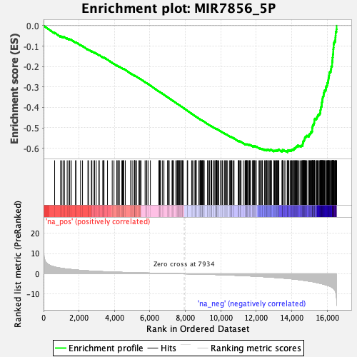
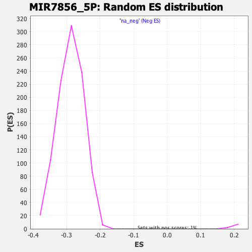

| | | Dataset | DE_genes2 |
| Phenotype | NoPhenotypeAvailable |
| Upregulated in class | na_neg |
| GeneSet | MIR7856_5P |
| Enrichment Score (ES) | -0.619247 |
| Normalized Enrichment Score (NES) | -2.1468725 |
| Nominal p-value | 0.0 |
| FDR q-value | 0.0 |
| FWER p-Value | 0.0 |
Table: GSEA Results Summary

Fig 1: Enrichment plot: MIR7856_5P
Profile of the Running ES Score & Positions of GeneSet Members on the Rank Ordered List
| PROBE | GENE SYMBOL | GENE_TITLE | RANK IN GENE LIST | RANK METRIC SCORE | RUNNING ES | CORE ENRICHMENT | | 1 | TERF2IP | | | 625 | 3.362 | -0.0347 | No |
| 2 | SOX9 | | | 959 | 2.783 | -0.0520 | No |
| 3 | RAB11FIP1 | | | 1035 | 2.696 | -0.0534 | No |
| 4 | ANKRD13A | | | 1128 | 2.569 | -0.0561 | No |
| 5 | SRI | | | 1175 | 2.500 | -0.0560 | No |
| 6 | RASGRP1 | | | 1333 | 2.326 | -0.0629 | No |
| 7 | TRIM14 | | | 1437 | 2.233 | -0.0667 | No |
| 8 | RNASE4 | | | 1478 | 2.197 | -0.0666 | No |
| 9 | DIXDC1 | | | 1566 | 2.115 | -0.0694 | No |
| 10 | IRX6 | | | 1803 | 1.913 | -0.0818 | No |
| 11 | ZNF414 | | | 1830 | 1.897 | -0.0811 | No |
| 12 | SERF2 | | | 2086 | 1.692 | -0.0949 | No |
| 13 | PDGFRA | | | 2198 | 1.621 | -0.0999 | No |
| 14 | GABARAPL1 | | | 2502 | 1.441 | -0.1169 | No |
| 15 | VGLL4 | | | 2536 | 1.422 | -0.1172 | No |
| 16 | ATP11A | | | 2696 | 1.340 | -0.1255 | No |
| 17 | RAP2B | | | 2726 | 1.320 | -0.1257 | No |
| 18 | VPS53 | | | 2851 | 1.265 | -0.1319 | No |
| 19 | LGALSL | | | 2873 | 1.256 | -0.1317 | No |
| 20 | CASP10 | | | 2967 | 1.210 | -0.1360 | No |
| 21 | ROBO2 | | | 3122 | 1.146 | -0.1442 | No |
| 22 | SLC46A3 | | | 3143 | 1.137 | -0.1441 | No |
| 23 | GPR37 | | | 3340 | 1.061 | -0.1550 | No |
| 24 | ZBTB7A | | | 3385 | 1.044 | -0.1565 | No |
| 25 | RTKN2 | | | 3395 | 1.042 | -0.1558 | No |
| 26 | DRD5 | | | 3409 | 1.035 | -0.1554 | No |
| 27 | SHROOM3 | | | 3606 | 0.967 | -0.1663 | No |
| 28 | FAM120B | | | 3873 | 0.874 | -0.1818 | No |
| 29 | CNTNAP2 | | | 3973 | 0.845 | -0.1869 | No |
| 30 | STARD5 | | | 4134 | 0.798 | -0.1958 | No |
| 31 | CTNNB1 | | | 4151 | 0.794 | -0.1959 | No |
| 32 | FBP1 | | | 4234 | 0.767 | -0.2000 | No |
| 33 | ERBB3 | | | 4249 | 0.764 | -0.2000 | No |
| 34 | ITPR3 | | | 4272 | 0.758 | -0.2005 | No |
| 35 | GBP3 | | | 4417 | 0.715 | -0.2085 | No |
| 36 | PRRT2 | | | 4450 | 0.707 | -0.2097 | No |
| 37 | MAPK14 | | | 4502 | 0.693 | -0.2120 | No |
| 38 | FBXO25 | | | 4507 | 0.691 | -0.2114 | No |
| 39 | DMKN | | | 4516 | 0.689 | -0.2111 | No |
| 40 | MEAF6 | | | 4612 | 0.659 | -0.2162 | No |
| 41 | MICAL3 | | | 4916 | 0.590 | -0.2343 | No |
| 42 | LAMA4 | | | 4937 | 0.584 | -0.2348 | No |
| 43 | PHF12 | | | 5034 | 0.562 | -0.2401 | No |
| 44 | PPCS | | | 5131 | 0.535 | -0.2454 | No |
| 45 | SRPX | | | 5137 | 0.533 | -0.2451 | No |
| 46 | BACE1 | | | 5139 | 0.533 | -0.2445 | No |
| 47 | COL5A2 | | | 5167 | 0.527 | -0.2455 | No |
| 48 | RAB40B | | | 5253 | 0.504 | -0.2502 | No |
| 49 | TTC22 | | | 5379 | 0.474 | -0.2574 | No |
| 50 | CAMK4 | | | 5407 | 0.468 | -0.2585 | No |
| 51 | ROBO1 | | | 5446 | 0.461 | -0.2603 | No |
| 52 | RGCC | | | 5499 | 0.450 | -0.2630 | No |
| 53 | ITM2B | | | 5726 | 0.399 | -0.2765 | No |
| 54 | ERP29 | | | 5805 | 0.384 | -0.2808 | No |
| 55 | DNAH6 | | | 5824 | 0.380 | -0.2815 | No |
| 56 | ITGB8 | | | 5895 | 0.366 | -0.2854 | No |
| 57 | SLC1A4 | | | 6025 | 0.341 | -0.2930 | No |
| 58 | RRAGD | | | 6504 | 0.244 | -0.3222 | No |
| 59 | CLUL1 | | | 6529 | 0.239 | -0.3234 | No |
| 60 | TCEANC | | | 6548 | 0.234 | -0.3243 | No |
| 61 | CHD6 | | | 6569 | 0.230 | -0.3252 | No |
| 62 | THRB | | | 6605 | 0.221 | -0.3271 | No |
| 63 | RGS9 | | | 6713 | 0.200 | -0.3335 | No |
| 64 | RWDD2B | | | 6792 | 0.186 | -0.3381 | No |
| 65 | NHLH2 | | | 6998 | 0.156 | -0.3506 | No |
| 66 | CDH26 | | | 7019 | 0.151 | -0.3517 | No |
| 67 | NTRK2 | | | 7024 | 0.151 | -0.3517 | No |
| 68 | SNX18 | | | 7088 | 0.137 | -0.3555 | No |
| 69 | ZNF320 | | | 7247 | 0.107 | -0.3651 | No |
| 70 | GRIP1 | | | 7276 | 0.101 | -0.3667 | No |
| 71 | MRPL17 | | | 7291 | 0.099 | -0.3675 | No |
| 72 | MGAT4A | | | 7327 | 0.093 | -0.3695 | No |
| 73 | FOXO1 | | | 7461 | 0.072 | -0.3777 | No |
| 74 | IPCEF1 | | | 7530 | 0.060 | -0.3818 | No |
| 75 | FAM172A | | | 7541 | 0.058 | -0.3824 | No |
| 76 | AK4 | | | 7578 | 0.052 | -0.3845 | No |
| 77 | PON2 | | | 7589 | 0.051 | -0.3851 | No |
| 78 | TMEM108 | | | 7609 | 0.047 | -0.3862 | No |
| 79 | KLB | | | 7651 | 0.040 | -0.3887 | No |
| 80 | TRAF6 | | | 7690 | 0.035 | -0.3910 | No |
| 81 | KLF13 | | | 7694 | 0.034 | -0.3911 | No |
| 82 | SLC50A1 | | | 7705 | 0.032 | -0.3917 | No |
| 83 | SH3RF1 | | | 7793 | 0.019 | -0.3971 | No |
| 84 | GCNT1 | | | 7812 | 0.016 | -0.3982 | No |
| 85 | DACH1 | | | 7818 | 0.014 | -0.3985 | No |
| 86 | PPARGC1B | | | 7847 | 0.011 | -0.4002 | No |
| 87 | F5 | | | 7877 | 0.007 | -0.4020 | No |
| 88 | MKNK2 | | | 8105 | -0.027 | -0.4160 | No |
| 89 | ACVR2A | | | 8129 | -0.030 | -0.4174 | No |
| 90 | BMPR2 | | | 8353 | -0.067 | -0.4311 | No |
| 91 | NRXN3 | | | 8405 | -0.077 | -0.4341 | No |
| 92 | PSEN2 | | | 8498 | -0.093 | -0.4397 | No |
| 93 | TRABD | | | 8571 | -0.106 | -0.4440 | No |
| 94 | THAP2 | | | 8585 | -0.108 | -0.4447 | No |
| 95 | FIBIN | | | 8586 | -0.108 | -0.4446 | No |
| 96 | CDH8 | | | 8597 | -0.109 | -0.4451 | No |
| 97 | TRIM2 | | | 8613 | -0.111 | -0.4459 | No |
| 98 | ADGRL3 | | | 8759 | -0.145 | -0.4547 | No |
| 99 | GLT8D2 | | | 8815 | -0.154 | -0.4579 | No |
| 100 | GALNT3 | | | 8850 | -0.161 | -0.4598 | No |
| 101 | GIPC2 | | | 8859 | -0.162 | -0.4601 | No |
| 102 | SLC12A2 | | | 8860 | -0.162 | -0.4599 | No |
| 103 | LRAT | | | 8862 | -0.163 | -0.4598 | No |
| 104 | SLC4A4 | | | 8921 | -0.176 | -0.4631 | No |
| 105 | RAB30 | | | 8948 | -0.181 | -0.4645 | No |
| 106 | CDC14A | | | 8976 | -0.187 | -0.4660 | No |
| 107 | KIAA1324L | | | 8977 | -0.188 | -0.4658 | No |
| 108 | WDR47 | | | 8999 | -0.192 | -0.4668 | No |
| 109 | EPHA3 | | | 9017 | -0.196 | -0.4677 | No |
| 110 | ARL8B | | | 9063 | -0.206 | -0.4702 | No |
| 111 | GTF2I | | | 9255 | -0.257 | -0.4817 | No |
| 112 | NMI | | | 9257 | -0.257 | -0.4815 | No |
| 113 | NCOA7 | | | 9341 | -0.274 | -0.4863 | No |
| 114 | CAMTA1 | | | 9356 | -0.277 | -0.4868 | No |
| 115 | KCTD7 | | | 9440 | -0.301 | -0.4916 | No |
| 116 | TVP23A | | | 9454 | -0.303 | -0.4920 | No |
| 117 | GSS | | | 9460 | -0.304 | -0.4920 | No |
| 118 | GEMIN8 | | | 9484 | -0.309 | -0.4930 | No |
| 119 | CAB39 | | | 9490 | -0.311 | -0.4930 | No |
| 120 | UBFD1 | | | 9593 | -0.338 | -0.4989 | No |
| 121 | MCTS1 | | | 9618 | -0.345 | -0.5000 | No |
| 122 | GLCE | | | 9668 | -0.360 | -0.5026 | No |
| 123 | ZRANB1 | | | 9723 | -0.376 | -0.5055 | No |
| 124 | SRSF8 | | | 9728 | -0.377 | -0.5053 | No |
| 125 | MBOAT2 | | | 9739 | -0.379 | -0.5054 | No |
| 126 | KLHL31 | | | 9753 | -0.386 | -0.5058 | No |
| 127 | ELL2 | | | 9768 | -0.392 | -0.5062 | No |
| 128 | ZNF468 | | | 9776 | -0.393 | -0.5062 | No |
| 129 | RNF216 | | | 9794 | -0.399 | -0.5067 | No |
| 130 | SULT1C4 | | | 9852 | -0.416 | -0.5098 | No |
| 131 | DNMBP | | | 9878 | -0.421 | -0.5108 | No |
| 132 | HIVEP1 | | | 9989 | -0.457 | -0.5171 | No |
| 133 | ARHGAP18 | | | 10011 | -0.463 | -0.5178 | No |
| 134 | DAAM1 | | | 10078 | -0.483 | -0.5213 | No |
| 135 | ZBTB43 | | | 10109 | -0.493 | -0.5226 | No |
| 136 | ZNF568 | | | 10217 | -0.530 | -0.5286 | No |
| 137 | TNRC6B | | | 10236 | -0.535 | -0.5291 | No |
| 138 | MASP2 | | | 10295 | -0.553 | -0.5320 | No |
| 139 | DOCK7 | | | 10314 | -0.559 | -0.5325 | No |
| 140 | SLFN13 | | | 10360 | -0.572 | -0.5346 | No |
| 141 | TTLL7 | | | 10482 | -0.613 | -0.5413 | No |
| 142 | UBE2A | | | 10524 | -0.634 | -0.5431 | No |
| 143 | UNC50 | | | 10574 | -0.652 | -0.5454 | No |
| 144 | REV1 | | | 10577 | -0.653 | -0.5447 | No |
| 145 | MCCC2 | | | 10603 | -0.665 | -0.5455 | No |
| 146 | FLRT3 | | | 10622 | -0.669 | -0.5458 | No |
| 147 | DGKH | | | 10687 | -0.688 | -0.5490 | No |
| 148 | ABL2 | | | 10745 | -0.707 | -0.5517 | No |
| 149 | IRS2 | | | 10986 | -0.796 | -0.5656 | No |
| 150 | MAB21L1 | | | 10993 | -0.799 | -0.5650 | No |
| 151 | DHX40 | | | 11004 | -0.804 | -0.5646 | No |
| 152 | PAQR5 | | | 11023 | -0.810 | -0.5648 | No |
| 153 | HDX | | | 11078 | -0.834 | -0.5672 | No |
| 154 | MAP4K4 | | | 11082 | -0.835 | -0.5664 | No |
| 155 | TMEM260 | | | 11142 | -0.857 | -0.5690 | No |
| 156 | CPE | | | 11265 | -0.910 | -0.5755 | No |
| 157 | RNF2 | | | 11364 | -0.953 | -0.5804 | No |
| 158 | PLAA | | | 11380 | -0.961 | -0.5802 | No |
| 159 | WDR26 | | | 11419 | -0.977 | -0.5814 | No |
| 160 | HMGXB4 | | | 11442 | -0.986 | -0.5816 | No |
| 161 | PTPN13 | | | 11449 | -0.986 | -0.5808 | No |
| 162 | PCSK6 | | | 11466 | -0.994 | -0.5806 | No |
| 163 | VDAC3 | | | 11488 | -1.002 | -0.5807 | No |
| 164 | C18orf25 | | | 11511 | -1.009 | -0.5809 | No |
| 165 | CNKSR2 | | | 11582 | -1.039 | -0.5840 | No |
| 166 | SLC10A7 | | | 11600 | -1.046 | -0.5838 | No |
| 167 | KIAA1841 | | | 11620 | -1.054 | -0.5837 | No |
| 168 | WASL | | | 11643 | -1.062 | -0.5838 | No |
| 169 | COBLL1 | | | 11674 | -1.077 | -0.5844 | No |
| 170 | PAIP1 | | | 11796 | -1.132 | -0.5906 | No |
| 171 | C14orf132 | | | 11798 | -1.133 | -0.5893 | No |
| 172 | RBPJ | | | 11843 | -1.150 | -0.5907 | No |
| 173 | VAX1 | | | 11866 | -1.160 | -0.5907 | No |
| 174 | AKR1E2 | | | 11876 | -1.164 | -0.5898 | No |
| 175 | SLC41A1 | | | 11889 | -1.175 | -0.5892 | No |
| 176 | RAB3IP | | | 11922 | -1.186 | -0.5898 | No |
| 177 | INO80D | | | 11983 | -1.212 | -0.5920 | No |
| 178 | OSBPL6 | | | 11993 | -1.217 | -0.5912 | No |
| 179 | TRIM9 | | | 12150 | -1.307 | -0.5993 | No |
| 180 | FGF12 | | | 12190 | -1.322 | -0.6001 | No |
| 181 | PPP1R9A | | | 12236 | -1.343 | -0.6013 | No |
| 182 | GLRB | | | 12279 | -1.366 | -0.6023 | No |
| 183 | HIPK3 | | | 12328 | -1.391 | -0.6036 | No |
| 184 | AAGAB | | | 12340 | -1.396 | -0.6027 | No |
| 185 | HOOK1 | | | 12458 | -1.453 | -0.6082 | No |
| 186 | DDX31 | | | 12484 | -1.469 | -0.6080 | No |
| 187 | WTAP | | | 12516 | -1.483 | -0.6082 | No |
| 188 | PRRG1 | | | 12570 | -1.517 | -0.6096 | No |
| 189 | RYR3 | | | 12579 | -1.524 | -0.6083 | No |
| 190 | TMEM237 | | | 12593 | -1.530 | -0.6073 | No |
| 191 | TIMMDC1 | | | 12643 | -1.558 | -0.6085 | No |
| 192 | TBX3 | | | 12667 | -1.575 | -0.6081 | No |
| 193 | DRD1 | | | 12682 | -1.580 | -0.6071 | No |
| 194 | BRWD3 | | | 12760 | -1.622 | -0.6099 | No |
| 195 | HMGA2 | | | 12776 | -1.631 | -0.6089 | No |
| 196 | NEXN | | | 12784 | -1.635 | -0.6074 | No |
| 197 | E2F3 | | | 12840 | -1.682 | -0.6089 | No |
| 198 | RCOR3 | | | 12856 | -1.692 | -0.6078 | No |
| 199 | CLOCK | | | 12988 | -1.761 | -0.6138 | No |
| 200 | ZDHHC2 | | | 12991 | -1.764 | -0.6118 | No |
| 201 | BIRC3 | | | 13027 | -1.785 | -0.6119 | No |
| 202 | TIPRL | | | 13063 | -1.807 | -0.6119 | No |
| 203 | RAD23B | | | 13094 | -1.823 | -0.6116 | No |
| 204 | CPEB1 | | | 13137 | -1.849 | -0.6121 | No |
| 205 | ING3 | | | 13150 | -1.860 | -0.6106 | No |
| 206 | RNF217 | | | 13183 | -1.882 | -0.6104 | No |
| 207 | PEX12 | | | 13217 | -1.900 | -0.6102 | No |
| 208 | ACP1 | | | 13234 | -1.913 | -0.6089 | No |
| 209 | SPIN1 | | | 13237 | -1.915 | -0.6068 | No |
| 210 | ZCRB1 | | | 13273 | -1.938 | -0.6066 | No |
| 211 | KLHL28 | | | 13452 | -2.071 | -0.6152 | No |
| 212 | USP38 | | | 13462 | -2.074 | -0.6133 | No |
| 213 | ALCAM | | | 13469 | -2.081 | -0.6112 | No |
| 214 | BBIP1 | | | 13476 | -2.084 | -0.6091 | No |
| 215 | CDV3 | | | 13495 | -2.097 | -0.6078 | No |
| 216 | SSR1 | | | 13576 | -2.145 | -0.6102 | No |
| 217 | USP10 | | | 13666 | -2.213 | -0.6131 | No |
| 218 | PPP3CB | | | 13767 | -2.299 | -0.6165 | Yes |
| 219 | CCT8 | | | 13769 | -2.300 | -0.6139 | Yes |
| 220 | OARD1 | | | 13772 | -2.301 | -0.6113 | Yes |
| 221 | FBXO22 | | | 13803 | -2.333 | -0.6104 | Yes |
| 222 | PDCD10 | | | 13828 | -2.354 | -0.6091 | Yes |
| 223 | AIDA | | | 13906 | -2.419 | -0.6110 | Yes |
| 224 | TYMSOS | | | 13938 | -2.442 | -0.6100 | Yes |
| 225 | IFT57 | | | 13981 | -2.482 | -0.6097 | Yes |
| 226 | LRRC19 | | | 13997 | -2.493 | -0.6077 | Yes |
| 227 | ZNF546 | | | 14025 | -2.515 | -0.6064 | Yes |
| 228 | NANP | | | 14058 | -2.557 | -0.6053 | Yes |
| 229 | SPOPL | | | 14119 | -2.613 | -0.6060 | Yes |
| 230 | LMBR1 | | | 14125 | -2.618 | -0.6032 | Yes |
| 231 | VPS13C | | | 14138 | -2.631 | -0.6008 | Yes |
| 232 | AVL9 | | | 14172 | -2.662 | -0.5997 | Yes |
| 233 | MOSPD2 | | | 14205 | -2.697 | -0.5985 | Yes |
| 234 | SGCD | | | 14208 | -2.698 | -0.5955 | Yes |
| 235 | RAP2A | | | 14243 | -2.739 | -0.5943 | Yes |
| 236 | MBTPS2 | | | 14272 | -2.756 | -0.5928 | Yes |
| 237 | ARPP19 | | | 14285 | -2.770 | -0.5903 | Yes |
| 238 | FAM120A | | | 14328 | -2.811 | -0.5896 | Yes |
| 239 | DCUN1D5 | | | 14336 | -2.816 | -0.5867 | Yes |
| 240 | FZD3 | | | 14403 | -2.879 | -0.5874 | Yes |
| 241 | B3GALNT2 | | | 14467 | -2.953 | -0.5878 | Yes |
| 242 | FBXO45 | | | 14532 | -3.027 | -0.5881 | Yes |
| 243 | PNISR | | | 14564 | -3.061 | -0.5865 | Yes |
| 244 | SNX13 | | | 14614 | -3.129 | -0.5858 | Yes |
| 245 | DMXL1 | | | 14617 | -3.132 | -0.5822 | Yes |
| 246 | TRIT1 | | | 14619 | -3.138 | -0.5786 | Yes |
| 247 | TRAPPC2 | | | 14631 | -3.162 | -0.5755 | Yes |
| 248 | EIF2S1 | | | 14635 | -3.169 | -0.5720 | Yes |
| 249 | DZIP1 | | | 14644 | -3.178 | -0.5687 | Yes |
| 250 | VMA21 | | | 14647 | -3.181 | -0.5651 | Yes |
| 251 | EPHA7 | | | 14683 | -3.221 | -0.5634 | Yes |
| 252 | XRN1 | | | 14695 | -3.238 | -0.5603 | Yes |
| 253 | KRAS | | | 14706 | -3.249 | -0.5571 | Yes |
| 254 | CFL2 | | | 14731 | -3.278 | -0.5547 | Yes |
| 255 | PPP1CB | | | 14739 | -3.295 | -0.5512 | Yes |
| 256 | FSD1L | | | 14743 | -3.299 | -0.5475 | Yes |
| 257 | TMTC4 | | | 14759 | -3.315 | -0.5446 | Yes |
| 258 | PAQR3 | | | 14800 | -3.360 | -0.5431 | Yes |
| 259 | SCAI | | | 14827 | -3.393 | -0.5407 | Yes |
| 260 | MAP3K2 | | | 14856 | -3.434 | -0.5383 | Yes |
| 261 | CCNJ | | | 14959 | -3.584 | -0.5404 | Yes |
| 262 | A1CF | | | 14960 | -3.585 | -0.5362 | Yes |
| 263 | MTERF3 | | | 14991 | -3.633 | -0.5337 | Yes |
| 264 | RRM2B | | | 15001 | -3.653 | -0.5300 | Yes |
| 265 | LRP6 | | | 15043 | -3.706 | -0.5282 | Yes |
| 266 | BZW1 | | | 15067 | -3.745 | -0.5252 | Yes |
| 267 | ZYG11B | | | 15069 | -3.746 | -0.5208 | Yes |
| 268 | NAV3 | | | 15117 | -3.804 | -0.5192 | Yes |
| 269 | SRPK2 | | | 15148 | -3.841 | -0.5165 | Yes |
| 270 | ETV1 | | | 15152 | -3.846 | -0.5122 | Yes |
| 271 | LRIF1 | | | 15153 | -3.852 | -0.5076 | Yes |
| 272 | SIRT1 | | | 15154 | -3.852 | -0.5031 | Yes |
| 273 | ENOSF1 | | | 15160 | -3.864 | -0.4988 | Yes |
| 274 | HECTD1 | | | 15173 | -3.883 | -0.4950 | Yes |
| 275 | RICTOR | | | 15182 | -3.895 | -0.4909 | Yes |
| 276 | SRSF1 | | | 15186 | -3.901 | -0.4865 | Yes |
| 277 | RAP2C | | | 15227 | -3.960 | -0.4843 | Yes |
| 278 | YOD1 | | | 15242 | -3.991 | -0.4804 | Yes |
| 279 | ATP13A3 | | | 15255 | -4.031 | -0.4764 | Yes |
| 280 | PANK3 | | | 15271 | -4.066 | -0.4725 | Yes |
| 281 | FXR1 | | | 15273 | -4.071 | -0.4678 | Yes |
| 282 | SEH1L | | | 15275 | -4.073 | -0.4631 | Yes |
| 283 | SRSF2 | | | 15276 | -4.073 | -0.4582 | Yes |
| 284 | SPRED1 | | | 15304 | -4.118 | -0.4551 | Yes |
| 285 | TMX4 | | | 15380 | -4.259 | -0.4547 | Yes |
| 286 | FNDC3A | | | 15410 | -4.320 | -0.4514 | Yes |
| 287 | PHACTR2 | | | 15423 | -4.347 | -0.4470 | Yes |
| 288 | DNAJC25 | | | 15448 | -4.383 | -0.4433 | Yes |
| 289 | KCNT2 | | | 15474 | -4.437 | -0.4396 | Yes |
| 290 | ARFGEF2 | | | 15493 | -4.462 | -0.4354 | Yes |
| 291 | ZFHX3 | | | 15548 | -4.579 | -0.4334 | Yes |
| 292 | TWF1 | | | 15581 | -4.658 | -0.4299 | Yes |
| 293 | COPS2 | | | 15606 | -4.736 | -0.4257 | Yes |
| 294 | DPY19L3 | | | 15613 | -4.744 | -0.4205 | Yes |
| 295 | MOB1B | | | 15615 | -4.752 | -0.4150 | Yes |
| 296 | NUFIP2 | | | 15626 | -4.769 | -0.4100 | Yes |
| 297 | ZBTB41 | | | 15635 | -4.784 | -0.4048 | Yes |
| 298 | MFAP3L | | | 15636 | -4.786 | -0.3992 | Yes |
| 299 | ARHGAP12 | | | 15671 | -4.854 | -0.3955 | Yes |
| 300 | TMTC3 | | | 15685 | -4.876 | -0.3906 | Yes |
| 301 | XIAP | | | 15692 | -4.892 | -0.3852 | Yes |
| 302 | ZBTB6 | | | 15696 | -4.899 | -0.3796 | Yes |
| 303 | DCUN1D4 | | | 15701 | -4.910 | -0.3740 | Yes |
| 304 | ICE1 | | | 15718 | -4.940 | -0.3692 | Yes |
| 305 | UBLCP1 | | | 15721 | -4.949 | -0.3635 | Yes |
| 306 | RBAK | | | 15735 | -4.978 | -0.3584 | Yes |
| 307 | IDE | | | 15743 | -4.998 | -0.3529 | Yes |
| 308 | TTC21B | | | 15751 | -5.010 | -0.3475 | Yes |
| 309 | CREBZF | | | 15788 | -5.095 | -0.3437 | Yes |
| 310 | VCPIP1 | | | 15796 | -5.115 | -0.3381 | Yes |
| 311 | GNPNAT1 | | | 15804 | -5.139 | -0.3324 | Yes |
| 312 | ZDHHC21 | | | 15817 | -5.173 | -0.3271 | Yes |
| 313 | PPP4R3B | | | 15838 | -5.242 | -0.3221 | Yes |
| 314 | KIF16B | | | 15850 | -5.266 | -0.3166 | Yes |
| 315 | KAT6A | | | 15910 | -5.415 | -0.3138 | Yes |
| 316 | CDC73 | | | 15926 | -5.457 | -0.3083 | Yes |
| 317 | ABCE1 | | | 15929 | -5.459 | -0.3020 | Yes |
| 318 | PTPN4 | | | 15944 | -5.492 | -0.2964 | Yes |
| 319 | LIMS1 | | | 15983 | -5.619 | -0.2921 | Yes |
| 320 | IRS1 | | | 16004 | -5.676 | -0.2866 | Yes |
| 321 | SP3 | | | 16006 | -5.687 | -0.2800 | Yes |
| 322 | ZNF507 | | | 16045 | -5.808 | -0.2755 | Yes |
| 323 | SLC4A7 | | | 16056 | -5.834 | -0.2692 | Yes |
| 324 | METTL8 | | | 16066 | -5.855 | -0.2629 | Yes |
| 325 | BROX | | | 16073 | -5.882 | -0.2563 | Yes |
| 326 | PIK3C2A | | | 16092 | -5.929 | -0.2504 | Yes |
| 327 | SUZ12 | | | 16102 | -5.959 | -0.2439 | Yes |
| 328 | TRIM33 | | | 16112 | -5.982 | -0.2374 | Yes |
| 329 | CCNE2 | | | 16115 | -5.986 | -0.2305 | Yes |
| 330 | BAG4 | | | 16151 | -6.125 | -0.2254 | Yes |
| 331 | CTDSPL2 | | | 16197 | -6.314 | -0.2208 | Yes |
| 332 | GPSM2 | | | 16202 | -6.325 | -0.2135 | Yes |
| 333 | EREG | | | 16225 | -6.454 | -0.2073 | Yes |
| 334 | PRKAA2 | | | 16228 | -6.461 | -0.1998 | Yes |
| 335 | MCTP1 | | | 16274 | -6.706 | -0.1946 | Yes |
| 336 | DICER1 | | | 16276 | -6.737 | -0.1868 | Yes |
| 337 | RIF1 | | | 16279 | -6.762 | -0.1789 | Yes |
| 338 | CPSF6 | | | 16289 | -6.822 | -0.1714 | Yes |
| 339 | REV3L | | | 16297 | -6.852 | -0.1638 | Yes |
| 340 | RC3H1 | | | 16302 | -6.867 | -0.1559 | Yes |
| 341 | CCDC88A | | | 16315 | -6.955 | -0.1484 | Yes |
| 342 | NFIB | | | 16319 | -6.978 | -0.1404 | Yes |
| 343 | MKLN1 | | | 16338 | -7.118 | -0.1331 | Yes |
| 344 | SREK1 | | | 16340 | -7.129 | -0.1247 | Yes |
| 345 | GXYLT1 | | | 16343 | -7.140 | -0.1164 | Yes |
| 346 | RAPGEF6 | | | 16351 | -7.216 | -0.1083 | Yes |
| 347 | QSER1 | | | 16360 | -7.265 | -0.1003 | Yes |
| 348 | SMAD5 | | | 16361 | -7.268 | -0.0917 | Yes |
| 349 | OGT | | | 16380 | -7.458 | -0.0840 | Yes |
| 350 | RMI1 | | | 16408 | -7.835 | -0.0764 | Yes |
| 351 | CNTN1 | | | 16457 | -8.479 | -0.0694 | Yes |
| 352 | TGFBR3 | | | 16462 | -8.531 | -0.0596 | Yes |
| 353 | THOC2 | | | 16468 | -8.629 | -0.0497 | Yes |
| 354 | SCN9A | | | 16476 | -8.889 | -0.0396 | Yes |
| 355 | LRRC58 | | | 16480 | -9.021 | -0.0292 | Yes |
| 356 | EYA4 | | | 16521 | -11.585 | -0.0180 | Yes |
| 357 | ZCCHC14 | | | 16531 | -15.692 | 0.0000 | Yes |
Table: GSEA details [plain text format]

Fig 2: MIR7856_5P: Random ES distribution
Gene set null distribution of ES for MIR7856_5P